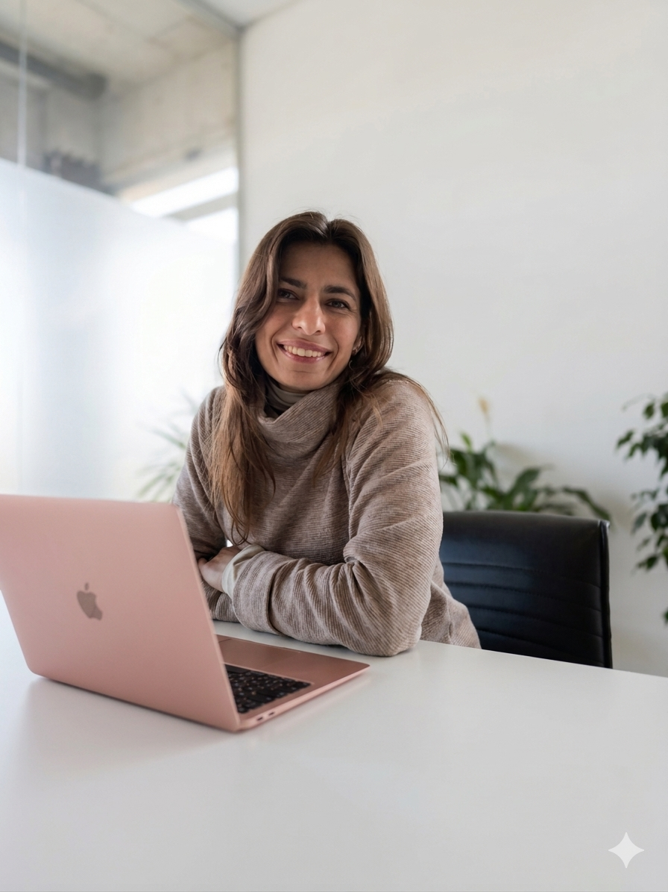
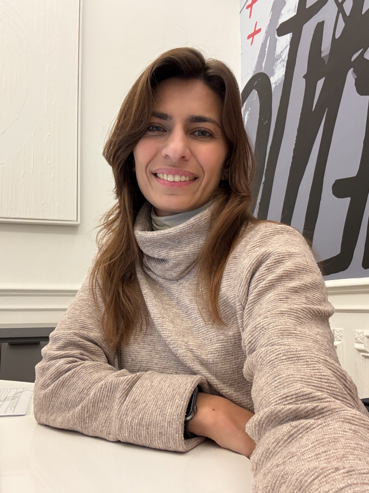

Helping professionals, entrepreneurs and businesses communicate clearly, stay organized and save time through efficient and reliable bilingual administrative support.


Public Translator in English and bilingual executive-assistance professional with experience supporting clients, executives and international teams.
Organized, proactive and committed to quality, confidentiality and reliable follow-through.
Let's work together!
✓ Save time
✓ Optimize processes
✓ Communicate in English & Spanish
✓ Organize day-to-day operations
✓ Support business growth
Microsoft 365
Google Workspace
Canva
Zoom / Microsoft Teams
CRM tools
ChatGPT & AI tools
Wordfast
Entrepreneurs & founders
Independent professionals
Executives & companies
Real estate professionals & agencies
Translation agencies
Remote teams
Public Translator in English
Universidad del Salvador
CTPCBA Registration
AATI Member
English–Spanish Interpreter